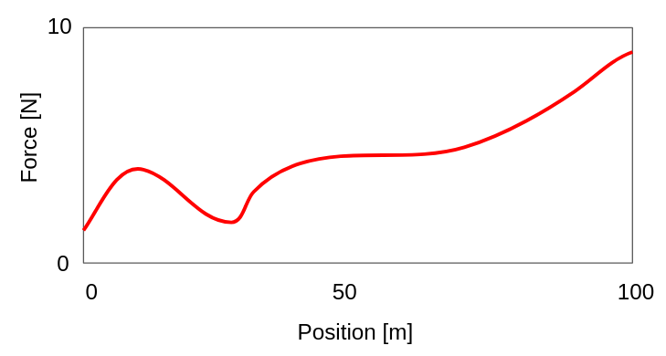
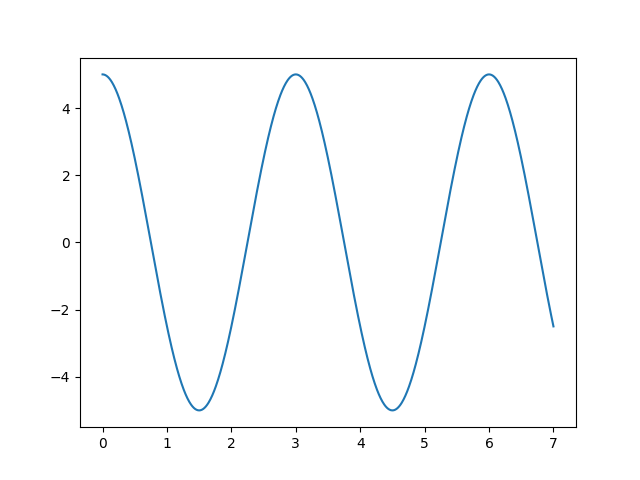

bool
Boolean: can only be 0 or 1
int
Integer: whole numbers
str
String: an ASCII character code
float
Floating point: can also be in scientific notation
int and float work differentlycomplex
Complex Numbers: simply made of 2 floating point numbersIf you're ever unsure, ask python!
type(variable)
boola the same value as b?"x == y: are x and y equal?x != y: are x and y unequal?x < y: is x less than y?x >= y: is x greater than or equal to y?bool to control flow through your programx = 6
y = 7
if x > y:
print("x is greater than y")
Note: this indentation is very important!
bool to control flow through your programx = 6
y = 7
if x > y:
print("x is greater than y")
else:
print("x is not greater than y")
Note: this indentation is very important!
while loopsi = 0
while i<5:
print(i)
i = i + 1
or
for i in range(5):
print(i)
range may behave unexpectedly.
range(1,5), range(1,5,2)print(list(range(5)))Physics application: work done by pulling
What might a for/while loop look like to compute work done from 3 m to 67 m?

modules that make it better!
numpy for any numerical workpandas for data processingmatplotlib for plottingrandom for random numbers
import numpy gives you access to everything in numpy
import numpy
print(numpy.sqrt(100))
Note that I still needed to tell python where sqrt is defined
from numpy import * imports everything and allows you to do:
from numpy import *
print(sqrt(100))
This is dangerous because it can overwrite functions!
from numpy import sqrt if you only need one function
import numpy as np gives numpy a 'nickname'
import numpy as np
print(np.sqrt(100))
numpy without always having to type it outimport numpy as npnumpy arraysDo not want
f1 = 1.25
f2 = 1.29
...
We can store data in arrays, and I recommend always use numpy arrays
import numpy as np
position = np.array([0, 0.1, 0.2, 50.7, 50.8])
force = np.array([1.25, 1.29, 1.35, 2.76, 2.76])
print(position)
print(force[2])
print(type(force))
[ 0. 0.1 0.2 50.7 50.8] 1.35 <class 'numpy.ndarray'>
(is this what you expected for force[2]?)
x = [10, 20, 40, 80, 120]
print(x[1]) # the 2nd box, since counting starts at 0
print(x[1:3]) # includes the start, excludes the end
print(x[-1]) # 1 back from the end
print(x[-3:-1]) # can you predict the output?
print(x[0:len(x):2]) # can you predict the output?
print(x[::2]) # shortcut!
What might a for/while loop look like to compute work done from 3 m to 67 m?
Put aside the previous example of work done for now. We need to practice working with arrays of data
We have two tools that we still need to make this easier
arange and linspaceThese will be workhorses for this entire class
np.arange
like range, but returns an array
import numpy as np
t = np.arange(5)
print(t)
[0 1 2 3 4]
Also works with small steps
t = np.arange(0, 7, 0.1)
print(t)
[0. 0.1 0.2 0.3 0.4 0.5 0.6 0.7 0.8 0.9 1. 1.1 1.2 1.3 1.4 1.5 1.6 1.7 1.8 1.9 2. 2.1 2.2 2.3 2.4 2.5 2.6 2.7 2.8 2.9 3. 3.1 3.2 3.3 3.4 3.5 3.6 3.7 3.8 3.9 4. 4.1 4.2 4.3 4.4 4.5 4.6 4.7 4.8 4.9 5. 5.1 5.2 5.3 5.4 5.5 5.6 5.7 5.8 5.9 6. 6.1 6.2 6.3 6.4 6.5 6.6 6.7 6.8 6.9]
arange and linspacelinspace returns equally spaced numbers
Sometimes you know the start and end, and just want to break it into chunks
x = np.linspace(0,10,20)
print(x)
[ 0. 0.52631579 1.05263158 1.57894737 2.10526316 2.63157895 3.15789474 3.68421053 4.21052632 4.73684211 5.26315789 5.78947368 6.31578947 6.84210526 7.36842105 7.89473684 8.42105263 8.94736842 9.47368421 10. ]
np.linspace is inclusive of the beginning and endSome practice with accessing:
print("Just the first 10 elements: ", x[:10])
print("the last 10 elements: ", x[-10:])
Position of a simple harmonic operator:
Make an array of times from 0 to 7 seconds
t = np.linspace(0, 7, 1000)
numpy calculation, it does everything for youThis is called vectorized
x0 = 5
T = 3
x = x0 * np.cos(2 * np.pi * t / T)
Let's check
print("The first 10 elements, x = ", x[:10])
The first 10 elements, x = [5. 4.99946159 4.99784647 4.99515499 4.99138773 4.9865455 4.98062935 4.97364054 4.96558059 4.95645123]
Any time you want to repeat a task over and over, streamline!
np.cos() input is angle in radians, output is cosineSimple function
def myfirstfunction(aword):
print("The word is ", aword)
Add 7 to an integer
def addSeven(number):
return number+7
Try it!
newnumber = addSeven(4)
print(newnumber)
11
Try with a numpy array
newarray = addSeven(np.array([1,2,3,4,10]))
print(newarray)
[ 8 9 10 11 17]
It's always useful to plot the results
import matplotlib.pyplot as plt
import numpy as np
## Initial parameters
x0 = 5
T = 3
## Calculate the arrays of t and x
t = np.linspace(0, 7, 1000)
x = x0 * np.cos(2 * np.pi * t / T)
## plot them
plt.plot(t,x)
##plt.show()
